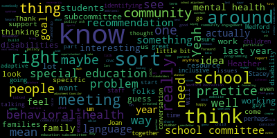

[McLaughlin]: authorizes public meetings, and the meeting can also be viewed through Medford Community Media on Comcast Channel 22 and Verizon Channel 43. Additional questions or comments can be made during the meeting by emailing Melanie McLaughlin at medford.k12.ma.us. If you do have questions or comments, we ask that you submit your first and last name, your Medford street address, and your question or comment. The agenda for today's meeting is we're asking community members to join us as we determine annual goals for our special ed and behavioral health subcommittee, including proposed problem practice and how we can work together to increase meaningful family and community engagement regarding these proposed concerns. So folks who don't know a little about the history of the Behavioral Health and Special Education Subcommittee, we were formed three years ago, actually, after multiple requests by the Special Education Parent Advisory Council, CPAC, to school committee to ask for a subcommittee specific to special education needs and issues, as there seem to be many, and these were in multiple annual reports to the school committee request for the subcommittee. It was initially created by Aaron DiBenedetto as school committee while I was chair of CPAC. So that's how we originated. And we really decided on a problem of practice for special education was building friendships, is building friendships between students with disabilities and without disabilities in our schools and our community. And some of the ways that we worked on that last year is looking at issues concerning Medford recreation and the creation of an adaptive, I mean, an adaptive, some adaptive programming for Medford recreation and an adaptive PE teacher in the schools, as well as unified sports. So we feel like we're moving things forward a bit, which is nice. It's nice to see some progress. And then for special education, you know, the topic that we had addressed last year, problem of practice, if you will, is helping to create trauma-informed schools. And there was some training and professional development that Stacey, you were putting forward regarding that, right? And we had a few meetings on that. And then we had parents who are also mental health workers, licensed social workers in the community that participated in those meetings and had some really great ideas about engaging and involving family members. So I did reach out to some community members who were not able to attend tonight, but had asked that we put forward some ideas. And I would also just love to hear from maybe each of you, and maybe you could talk a little bit about the structure for the meetings for this year, how you requested that it be structured a little bit differently based on just the tight schedule everyone has under the COVID pandemic, everything that you guys are dealing with. So I don't know which one of you wants to begin, but maybe one of you could start to talk about the difference in planning for this year.
[Joan Bowen]: Sure, so I think that, um, as you understand, reducing yourself don't because I'm just thinking about people who are watching. Sure. So hi I'm Joan Bowen I'm director of people services here for med for public schools. So Stacey and I reached out to Melanie about changing these. the structure of these meetings just a little bit to alternate between special education and behavioral health every other month. So we will alternate. We have the dates set up. I think Melanie included it in tonight's agenda or an email that will set up, you know, the nights that we will specifically talk about special education. and the dates that we will specifically talk about behavioral health. And hopefully when we identify our problem of practice or our goal for the upcoming year, this will be the topic of discussion and we'll put a plan into place. And then I believe at the end, we present this to school committee or it's brought forward to school committee. So we look forward to working with the community and the subcommittee this year in regards to that.
[McLaughlin]: Thank you. Joan, yeah, so what had been originally created as a special education subcommittee with a new administration in the 2019 term. additional subcommittees were created and topics were merged. And so we became, we moved from the special education subcommittee to these two really broad topics, behavioral health and special education. So last year, we tried to do like an hour and a half meeting where we're splitting it 45 minutes for each topic. And I think Folks felt like that maybe was a little bit long and perhaps a little disjointed. So this year we will alternate between the meetings, as you said, Joan. I think it'll be interesting to see how that goes and where people feel that's useful. I think some people feel that maybe what they thought was going to be nine meetings is now suddenly four or less. So that seems concerning. But I think one of the things that you had mentioned was that you felt maybe we could build some momentum on some of the topics in between some of the goals in between the meetings that gave us more time to sort of build some momentum around that.
[Joan Bowen]: Right. Right. And the, and the request is just for this year only. Um, you know, and we can relook at it at the end of the year, use this year to determine, you know, what was this way that we scheduled it? Does it work? Do we need more time? There may be, you know, sometimes special education needs more than an hour or maybe behavior health is a great presentation and we may need that. So I think it's relooking at that, looking at how it goes this year and then determining next year, how we want to proceed.
[McLaughlin]: Yeah, Stacey, do you want to add anything?
[Schulman]: Yeah, no, I just echo what Joan said. I think that, you know, this was the original format, I think, from two years ago. We alternated the two every other time. I think COVID presented a unique sort of challenge for additional communication. So we wanted to meet more frequently. And this is just going back to how we had done it for past practice and to see how that goes.
[Unidentified]: Yeah, I agree.
[Schulman]: Everything can change over time, but we are obviously like still in quite in the pandemic in a very different way than we were last year. So last year, the, you know, one of the most important things on our plate, which continues to be was communication with the community. So we want to make sure we were doing that as frequently as possible so that we were meeting constantly. But I think that there has been a bit of a shift to more intensive direct care, students and staff. Just changes a little bit, a little bit and allows us to have more time to work together between those meeting times.
[McLaughlin]: No, that sounds good. See the superintendent just during us welcome superintendent. We are talking about defining some problems of practice, which when we say problem of practice, just for the community, I wanna let you know that doesn't mean there's a problem. It means that we're identifying something to work on together to achieve a goal. So it's just sort of a phrase that is used in identifying sort of items to work on to achieve some goals. So I did have feedback from some of the staff families in the special education community, families of children with disabilities who want to continue to grow and foster partnership between Medford Recreation and Medford Public Schools around adaptive and unified programming, and specifically around sports, but also just around education. and supporting students with disabilities in our community. And just around even some basic symbolic acts, but additionally, appropriate language, sort of reaching out to community sponsors. So there already is some interaction between Medford Recreation and our school system where CCSR students are volunteering for Some of the adaptive programming that's occurring in Metro Recreation right now they're currently running a basketball program I mean a yeah basketball no soccer and Wednesday's soccer and basketball starting. So there is some opportunity but I think I know that we're folks are meeting both with Metro Brock and the mayor. And tomorrow, there's a meeting with Medford Recreation to sort of start to think about the language around this and how to make sure we're all on the same page regarding language, both in our schools and in our community, and that we are working together to create inclusive programming and in addition to adaptive programming. So I guess we can write this in a more eloquent way, and I'm happy to sort of, we can either brainstorm that now or through the chat, or we can bring it back to the meeting for the next month in terms of having a mission statement, or if you will, or problem of practice specific to special education.
[Joan Bowen]: Melanie, can you just speak a little bit to what you, can you clarify what you mean by appropriate language? Just so I'm on.
[McLaughlin]: Yeah, yeah, yeah. Just so everybody knows. So, you know, Joan, I'm sure you've heard people first language, right? You sort of heard, which for some people that's appropriate and for some people it's not. Some people prefer to have their diagnosis before their, you know, so for example, some people in the autism community prefer to be called autistic, but people perhaps in the Down syndrome community, People with autism may prefer to be called an autistic person, man, woman, what have you. And people, for example, in the Down syndrome community may prefer not to have Down syndrome kid first, have a child with Down syndrome or something. So it's sort of thinking about and educating community members and school staff and, you know, recreation staff and what have you around like what is and isn't appropriate language. And, you know, I look to people with disabilities themselves to really drive that conversation. And so I would want to include self-advocates in that conversation and really be able to understand what does that mean. And so I think just in all of our language, in our school, you know, in our community and in our school brochures, but also in our, on our websites, on our, you know, just sort of universally sort of looking at what is appropriate language. So, you know, when we say integrated, what does that mean? And, you know, inclusive, what does that mean? So maybe sort of just identifying what some of these terms actually mean to us and how we define them so that we're all sort of creating a primer, if you will, on what is, you know, acceptable and appropriate language in this way. Because sometimes I think, and what I hear from families is that They see something in writing or notice something in a brochure, and it is perfectly well intended it is not meant to hurt or harm by any stretch, but sometimes you don't know what you don't know. you know, it can be considered, you know, painful to family members of children with disabilities and to children with disabilities themselves or people with disabilities themselves. So just how are we being more sensitive around some of that? I think that's one way to start. Just around, again, brochures, you know, sports brochures, you know, signups, right? Like when we talked before about having like, you know, some, you know, quote in the signups, for example, that we all know Medford public schools doesn't discriminate based on, you know, race, you know, ability, all those things, but what does that language really look like? And how do we vet that as the special education subcommittee and make recommendations to the school committee so that this is universal language that's used across the districts and, you know, something that hopefully the city will adapt as well.
[Joan Bowen]: Okay, good. Thank you.
[McLaughlin]: Sure. Hi, Heather. Thanks for joining us.
[SPEAKER_06]: It's nice to be here. Nice to see you guys again. You too.
[McLaughlin]: Sorry for the last minute sort of we were just saying that it's been a little bit of a hectic month and I think we're all just been running and racing to try to feel like we're playing catch up and we're all shocked that next week is November already. So it's like, we haven't, I feel like I'm just starting to catch my breath and it's like November. It's like, uh-oh, here come the holidays.
[SPEAKER_06]: I feel the same way. I feel exactly the same way. It's bananas.
[SPEAKER_02]: It is, it is. And I think that, I think a big part of it, I was just talking to somebody about this yesterday, I think a big part of it is that, and maybe Stacey, you can talk to this a little bit as well.
[McLaughlin]: I think a big part of it is that people are, for the most part, trying to assume a normal, if you will, but it's not in a normal. I know it was a setting on a dryer, so I don't wanna sort of put it that way, but assume a regular schedule, I guess, or assume that we're post-COVID when we all know we're really not, and we're still in this sort of limbo of pre-COVID, life and post-COVID life and we're sort of not we don't really have our footing yet in terms of what's where we really are right and it does feel like at any moment it can be completely upended right any moment now any moment especially considering what we went through right and then and I think the other thing is that I was saying to somebody yesterday I felt like it's like I feel a little bit like where the Starks and the Game of Thrones, right? I feel like winter is coming. So we're all like, you know, we were closed in last year and we were all shut in. And it's like, we're approaching that time when we start to get shut in again and sort of, you know, when germs can sort of happen more rapidly or whatever. So I think people are just going through a lot. And Stacey, I'm sure you're seeing a lot of this in your work, right? In our schools, a lot of.
[Schulman]: Yeah, I think that, I think that part of what we're seeing is a typical pattern that we see annually talking about wintertime, so that people get like depressed over the winter, 25% of people in the Northeast experience depressive symptoms due to that are like weather climate right. And then for those people who those symptoms continue in March. They're like, wait a minute, this was supposed to go away once like the sun started coming back out. And I think that's very similar to what people are experiencing now when we had all talked about like when everyone's vaccinated and things are going to be totally different in the fall and we're going to start to be able to do all these things. And yes, the ability is there, but not without caution and not without, you know, sort of still thinking about it. And I don't think for everyone, this creates a mental health disorder, but it does, I think a lot of people, what they're experiencing is adrenaline fatigue. So they're just, they've been running, you know, like they've been running a marathon and they expected to sort of have a reprieve. It has not lifted yet.
[McLaughlin]: Interesting. Yeah.
[Schulman]: That's my own like personal opinion. Yeah, right. That's what I understand, yeah.
[SPEAKER_06]: Yeah. I do think that the mental load that goes along with the repercussions of COVID is a lot. For example, I went to the movies for the first time since pre-COVID last weekend, and I was spraying down the chairs with hand sanitizer and thinking, why didn't I ever think to do this before? This is disgusting. Like this whole new, germaphobia, it's taken complete toll. It's a lot to carry around all the time.
[McLaughlin]: It is a lot to carry around all the time. Thank you for articulating that, Heather. So one of the things that we're trying to determine tonight, Heather, and thank you, Carmen, for joining, is, and for folks who don't know Carmen, is the superintendent intern in working with Dr. Edouard Vincent. So thank you for joining. One of the things that we're working to do tonight is to identify a goal for the year for each of these particular areas. And I know for the behavioral health piece, one of the things that I heard a lot from the community last year for those who participated in our meetings and who were specifically talking about behavioral health We heard a lot about community family and community engagement. So we had several folks who came on board and who wanted to offer support services around like how can we support the schools as professionals, not that we would have, you know, people come in and, you know, you know, volunteer in a professional capacity, but they bring professional expertise to the table. So I'm thinking, for example, Heather Rumenak, we know is a licensed mental health worker and, you know, who had identified a number of topics she felt were of concern. And so did it, you know, was it an annual event that we host that's sort of around awareness or, you know, was there some other way that we engage community members and especially around some of the behavioral health, mental health stuff. We also had a family that participated regularly last year and I ran into mom recently who was talking a lot about invisible disability. And I think mental health is often, can often be what's perceived as an invisible disability when somebody has mental health needs and they don't necessarily wear those needs on their face or have an IEP accompanying them or a 504 accompanying them, or they may, but they still don't have those identifiable factors. And oftentimes what can present, what can be anxiety can present as behavior. and can result in negative outcomes for our children in our schools and with our staff. And I think that that's a really interesting aspect as well to consider as a problem of practice, perhaps to explore. And when we say problem of practice, I think that we think about what this subcommittee can do is offer resources, some research, some ideas and then come together to discuss them around how to address this particular problem of practice, hopefully come to some resolution by the end of the year on a couple of recommendations to make to school committee as policy. So I'm wondering if we want to just popcorn some ideas around perhaps, and Joan, I don't want to assume that we have agreed on the know, language and friendship sort of community thing yet either, so I'm just putting that out there, but I want to ask folks what they think specific to behavioral health goal, problem, or practice for this year.
[Schulman]: I don't have a specific goal in mind, but I think one thing that I have seen over the past decade, certainly in five years, is somewhat of an over pathologizing of anxiety. I think that it's really, everyone has anxiety. It's healthy to have anxiety. If you don't have anxiety, you don't know that to get out of the way of a fast moving car, cause that might hurt you. You're supposed to. But I, you know, I often see, you know, you know, one of the things that supports people with specifically an anxiety disorder, also depression, is the education around that 95% of people who have mental health disorders recover in a fairly short period of time with the appropriate care for it. And that some people don't, and they have chronic conditions, but because you have anxiety or depression does not mean you are, you know, going to be living with that forever. Melanie, you always do a great job of talking about how disability isn't permanent. And sometimes you are, you know, it could be like temporarily in some certain cases, and you've given great examples of that. So I think education around mental health, we've done a lot of it in the past four years, but there's certainly a need for more always. And I think that we're doing a lot in the schools around education to students, but certainly education to parents. is always a gap area. And we've done a lot of events, but it's hard for, I think, parents with really busy schedules, or perhaps dealing with an anxious child at home to attend those events. So problem solving, how to like get that information out in a meaningful, helpful way.
[McLaughlin]: Yeah, that's the thing is that I think that sometimes we think parents are aware of these opportunities. And I think oftentimes, maybe we're not communicating as effectively as we think, not you, Stacy, but just in terms of family and community engagement. And we are having a presentation, by the way, on family and community engagement. The audit that was done last year for the district on November 8th in our school committee meeting to talk about some of the things that an independent audit sort of noticed about, you know, ways to consider family and community engagement. I'm also providing professional development to staff at the Federation for Children with Special Needs on family and community engagement and have just done a really great course that they offer. You know, to schools for free as well around train the trainer and you know different ways to engage marginalized communities and I'm happy to share. you know, these resources, but that maybe the goal and problem of practice is to come up with some solid ideas on how to reach families and caregivers and students who are experiencing mental health needs around ways to engage them or educate them and people who aren't, I guess, around ways to engage them and educate them. around some of these specific school issues. So for example, Stacey, I think it's really great that you said we're doing a number of things with students in our schools. And it's like, wow, I'd love to know what those are, right? And I'm sure as a school committee member, I can find out what those things are, but as a community member, I think there's lots of people who would like to know what those things are. And so how are we actually thinking about that and sort of having that feedback and information I think could be interesting. Heather, did you wanna add anything?
[SPEAKER_06]: No, I'm sorry. I was talking to Henry. But I did want to mention one thing. I loved what you were saying about the person first piece. As I've been to a number of conferences where I've come across people who prefer to be called autistic as if this is a part of me and that's how I identify. Hold on a second, babe. some people who don't wish to be owned by a diagnosis. So I think that that also speaks to what Stacey was saying when it comes to people with generalized anxiety disorder or depression or any sort of things like this. Sometimes it's just, this is a condition that I have and I treat it with the appropriate care and consciousness. Yeah, about it. So those were my sort of thoughts about what was being being said.
[McLaughlin]: Yeah, thank you. Appreciate that. Hi, Henry. He's getting so big. Hi, Henry. Nice to see you, buddy.
[SPEAKER_06]: He said nice to see you.
[McLaughlin]: He's talking great. He's doing a lot. Nice. I can't anxious to see you, Heather. So we'll After Tuesday, hopefully we can get together.
[SPEAKER_06]: It's been too long. That would be lovely. I'm going to disappear for a couple of minutes. Don't worry.
[McLaughlin]: I'll be right back. Stacey, do you have some thoughts? For me, it's about really creating something that is tangible for use in the community. Last year, we I mean, last year was a little bit, you know, also difficult, but we sort of talked about professional development and, you know, having trauma-informed schools, but I feel like we didn't necessarily, we had a specific recommendation around funding some professional development for trauma-informed schools. Do you feel like, you know, sort of what was the uptake on that? Is the uptake on that?
[Schulman]: I mean, I would continue to support that recommendation wholeheartedly to carve that out. The reason I recommended it initially is because it matches well with what the state had originally recommended and didn't fund, right? So they didn't appropriate that law, but it still sits there and we do follow it. The worry though is without like a specific earmark there that it could potentially, you know, against better efforts fall sort of to the wayside if it's not like every X amount of years we're doing a specific effort. That being said, we do have a significant amount of programming coming in. So we've partnered with Sandy Hook Promise. which I talked about a couple of years ago, which we started doing in 2019, that has been a halted effort due to the COVID-19 pandemic. We are ramping up again with them to complete that formal process. And that includes talking about mental health awareness, see something, say something, how to connect with others. The first is the start with hello program, which we've successfully done in our middle and high schools this year. continue to evolve that process to include our elementary schools as Sandy Hook promising increases the curriculum for that level. And so we- Is that happening again this year? Yeah. Can you let us know when that's happening? Sure. So the start with hello starts at the beginning of the year because obviously that's what we want people to do and connect with each other. And then we'll continue on with the see something, say something. And who's actually doing this start with hello in the schools?
[McLaughlin]: Like how does that actually, what does that look like?
[Schulman]: Sure. So it looks like small programming throughout the school. There's a presentation, but they also do like small snippets throughout the week. It's a start with hello week. At the middle schools? In the high school. In the high school.
[McLaughlin]: Okay.
[Schulman]: So every day, like a specific theme to it, including like a gratitude tree for the completion at the high school that put things up. It's really about connecting the community. Yeah. Which is great. The community, the school community, I mean. And is there any way that we sort of publicize that and show any of that work? So we put it in newsletters, home to families, principals put out information. Okay, or we could continue to do, you know, better work on on sending information home to families we're working right now on changing our department of school counseling site, which right now the only one that we have with fairly robust information is the high school guidance. that to be the Department of School Counseling, which is the new name for everything.
[McLaughlin]: So that's interesting. Maybe that's one of the, you know, goals that we consider is how are we actually, you know, doing the, you know, the outreach around the Department of School Counseling, right? And sort of how are we letting families know? And I think what I'm thinking, Stacey, too, is like, I would love to see some examples of the newsletters just to sort of get an idea, because I'm thinking, are they going home and backpacks or are they going to home with students that like our school adjustment Councilors have specifically worked with? Are they going home to the entire population? Like, just curious how, what does that look like?
[Schulman]: No, I think that principals send home like their Friday communication to families or weekly communication to families. We are heading to everyone. Yeah, we're hopefully is that the start with hello programming is inclusive for all students. We are heading towards, you know, one of the goals for this year is to do at least a quarterly counseling newsletter for teens.
[McLaughlin]: Yeah. I mean, I, I think part of the problem is that, you know, so I had a son that just graduated last year from the high school. And I just think as a parent, like I never saw those. Right. But I mean, that's part of like part and parcel of a high schooler, right. Anyone that has a high school or knows that like suddenly. You know, even in middle school, you start to see this paperwork just you know drop off and suddenly there's not and you're like where are all those notices that used to come home in elementary school and it's like oh they're still coming, but you know, no one ever sees them. So thinking about how we could be reaching. families across platforms, I think is really interesting. So for example, I'm thinking about the studio show that we did, Medford Ed Talk last year, right? We had a couple of shows specific to mental health. And like one of the ones that I thought was really powerful was one of the last ones where the students were really talking about how they felt during the pandemic and how, and it was so sobering. for the community for the students to be able to really be able to talk be talking about this I was like wow, but I think just, you know, there are a number of ways and I know, Dr Edwin Vincent, you know, did video commercials for a while but I'm just thinking about a number of ways from the website to the, to the. you know, to the TV station, to, you know, CCSR, just a number of different ways. And how are we reaching families around, you know, increasing mental health supports and services? Because as we all know, there's an increased need for mental health supports and services with the pandemic for sure, right? The data is showing that there's so much more need for that. And so in terms of like a school committee person and budget, we're looking at even me talking to some community members. It's like when I was in, school, you know, when I was younger, there was no, there was no such thing as a school adjustment Councilor. There was guidance Councilors, right. And guidance Councilors sort of fell under the, under the, under the umbrella in my instance of both like dealing with, you know, mental health needs and, you know, any of those issues and vocational, which are like two really different things. Right. And I wonder how much of my generation and even the general, you know, you know, sort of parents that are younger than me, even know the differentiation between basics, like school adjustment Councilors and mental health outside consultant supports, if there are any, and or guidance Councilors and what their role is. Like, I just think it's interesting, because I don't know that, for example, we had somebody, a family that reached out to me last week about something, and they just didn't know where to go. They just didn't know where to go. And, you know, it's like, do I go to the teacher? Do I go to the principal? Do I go to the guidance Councilor? I'm like, have you talked to the school adjustment Councilor? And they were like, what? So it just was so interesting that I feel like sometimes we skip over some of the basic language of really, again, and maybe it's getting back to the language, Joan, around some of the understanding the basic language of how this actually works when you have a need and what those and where you reach out and how you get support. So maybe it's even helping to work together to create like a flow chart around like, when you have a need, you have this, you go here, whatever. And also maybe having some feedback from this subcommittee on the Department of School Counseling Outreach and quarterly newsletter and website revamp and what have you. What do you think of that idea?
[Schulman]: I don't wanna lose the opportunity, make sort of a proposal for school committee. So school committee sort of policy and procedure, right? Is sort of like our goal end mark of a subcommittee. Certainly I'm welcome to feedback about anything and I'm happy to present and get that here, but I don't wanna lose our momentum to create a presentation to school committee for some sort of policy or procedure.
[McLaughlin]: Oh, I couldn't agree more. And so I think what, yeah, no, I have I 100% agree. But I think what happens as as we dig into the meat of the matter around a subcommittee, we start to identify what some of the policy needs are and issues around this. And so that's how the recommendation comes up. And perhaps the recommendation is for additional funding for outreach to families around these particular issues, because as we were working on the problem of practice, we realized that families didn't know the difference between a school adjustment Councilor or didn't know that there was a school, you know, counseling website or that there would be or are not receiving the newsletters or whatever. So that could be sort of the basis of the policy ask. is the research that we do around these particular things. So I think it's, again, you know, because one of the biggest concerns I heard last year from the parents that were participating, particularly around behavioral health in this arena, was the disconnect that they felt from the school community, because when your child goes into sort of a triage around some of these things, you're in a whole different mode. You don't know where to find things. You're not necessarily feeling particularly connected. And the other thing is we don't know, like we said, disability is natural. None of us knows when our child is gonna be in that particular state or a need of need. And so it's better for the entire community to sort of really understand and be educated. So anyway, anyone else have any thoughts?
[Schulman]: I think one of the major gaps we're seeing in behavioral health is the, you know, availability of our community providers, like that's the biggest challenge we're seeing right now is who has availability. Now there is like a state website you can go on to that says who has, you know, how long the wait is or if there's any opening for specific services, but those are only large agencies. you know, if we have a network of providers, one of the things certainly that we could use assistance for is that outreach and connecting with other providers to say, do you have openings? Who do you, you know, who are you taking right now? Do you need insurance? Are you willing to see someone on a sliding scale? What is your wait list for that? And figuring out how do we sort of mimic that state system for wait times for our local providers, because that is certainly like a huge gap that we are seeing. I mean, we sent we have a large community resource book, we send parents to psychology today all the time. But I don't really have a pulse on all our community mental health providers, specifically. And if they have openings, or if they're willing, you know, you know, when are they willing to see students and families? only the few that I personally connect with and know of, but it would be helpful to increase that net.
[McLaughlin]: Yeah, that's interesting. And I guess I'm thinking just to the, I guess flipping that over to the same question that you asked a little while ago, how is that, how does that inform the school committee policy ask?
[SPEAKER_06]: Psychology Today has a terrific website for looking up providers in your area. It's pretty great. It doesn't necessarily speak to who has availability, how long the wait time is, but you're able to find providers there.
[Schulman]: Yeah, that's our go-to, that's like the first place that we refer people because it does have some information, but there is sort of that lack of additional sort of availability. Because people say, yes, I'm taking new patients and then you email them and they're overwhelmed too. So it's like no response for six months.
[McLaughlin]: Yeah, so maybe it is again, back to the family and community engagement piece around behavioral health, maybe it's working with, you know, stakeholders to determine what resources have been available to them, potentially, you know, sorting resources and creating sort of some recommendations around what to do with this information, whether it's, you know, additional funding to build a comparable sort of, you know, a page or something to a website that's like a searchable database or something along those lines. But I think it could be a combination of the two around engaging families and identifying behavioral health providers and resources. Maybe that's the sort of goal. And then when we identify those and we figure out what those are, the policy ask could potentially be. And this is part of the thing is that this is part of this subcommittee's mission is that it's a process. We don't know what the policy ask is gonna be. That's the whole point, right? If we knew what the policy ask was gonna be, we wouldn't even have to have these meetings and then we could just go right to the policy ask, right? The point is that we are sort of really having these conversations around these issues and bringing things to the table to sort of consider what they are and how they're helpful to have a policy ask.
[SPEAKER_06]: Melanie, I just wanted to mention that, you know, some support groups might be a nice resource for people. You know, I lead one through the MFN for parents and caregivers of children with autism. So, you know, certainly if you come across families that are in need of support, and fall under that sort of very niche criteria, please send them my way. I'm happy to meet with them one-on-one or, you know, get them onboarded onto our Facebook group, which is private, and have them join our meetings as well.
[McLaughlin]: Thank you so much, Heather. That's been really wonderful. And as we know, there's intersectionality between you know, specific disability and mental health needs, right? Just because a child has a disability doesn't mean they're all encompassing of that one disability and they don't have any other needs, right? There could be a lot of intersectionality. So thank you, I appreciate that. And I think that's really important. I'm liking this idea around a resource guide for behavioral health supports. And really, I think that could also inform some of the newsletter and or the counseling website. So what are you thinking, Stacey?
[Schulman]: Yeah, I mean we, you know, we're, we often use interns or other people to help us create those guides or updates but you know they're doing a lot of direct care work this year so we don't have that sort of support. So certainly if we have like more people to if people are like looking to assist right for a need. That's a definite need that we have right now.
[McLaughlin]: Yeah, no, I think that's an interesting idea. And I think that, you know, I would encourage, you know, your staff, interns, whoever to participate in the meetings as well, because I think it's important for us to have some, some conversation around what this actually can look like. So not that they, you know, are going to be tasked with sort of more work, but more around this, we're only meeting for an hour anyway. But sort of what is the in between time, what can we actually be working on that's helpful? And, you know, you're the director and you've got all these other things going on, but some of the, you know, some of the direct staff, you know, could be really helpful in sort of saying, this is actually what we've seen that we really need a lot with, you know, of work with, can somebody sort of give some thought to this or whatever. So I think that could be interesting. So perhaps, you know, the, you know, problem of practices around, you know, identifying resources for behavioral health supports for students and caregivers in our community, working together to propose policy around resources or something. So I'm just putting this in the chat as sort of an idea. And we'll craft something, you know, a little bit better to bring to school committee. I probably either will report out on November 8 and November 15 on this meeting. And then because we don't have a Well, even if we did have Paul and Mia here, we would still bring forward to the school committee to vote on as a whole. They don't necessarily need to vote on what we're, what we decided our problem with practices, but just, you know, to report out to them on what we're working on. Do you want to look at that, Stacy? Is there anything you wanted to add? No, it looks good. Okay. That's good. And then Joan, maybe I'm just getting a Word doc. All right, Google, yeah, Word doc, I guess you're gonna just put this in here so I don't lose it from the chat. Bear with me one second. It's interesting. Somebody else made a recommendation yesterday. I forget who it was. Oh, it was somebody from admin made a recommendation yesterday saying like maybe we need to have instead of like a one year subcommittee sort of goal that we're actually doing it on an 18 month basis so that we're taking because we're kind of carrying over some of the stuff, but that we're doing, you know, until November and I was wondering what you guys thought about that sort of carrying over so that we're not starting a new in October and finishing in you know, may and only had X amount of meetings, but we can talk about that more at the next meeting. It's just giving it some thought, like, do we actually think of this over a year and a half process just because, you know, it allows more time to sort of work together, but I guess we can just sort of see. Joan, what do you think?
[SPEAKER_06]: Yeah. I think that's a terrific idea. because I walked into this meeting wondering what happened with the friendship program. Did we get anywhere?
[McLaughlin]: Yeah, well, we did a summary and we did a report, but we are working. One of the things that we're proposing, Heather, is that we continue and expand those goals around identifying ways in which we build community and school friendships. among students with and without disabilities, or children without, yeah, students, I guess, with and without disabilities. Identifying ways in which to build community and school friendships among students with and without disabilities through recreational programming, after school, activities and. You know sports. Organizations, I guess, as well as in school. Inclusive meaningful inclusion or something, so I'll share this with you guys in a second and.
[Unidentified]: It's in the chat.
[McLaughlin]: I'm going to write, as well as provide clarifying language for inclusive practice. Or how about developing supportive language? As well as developing supportive language. Recommendations. Recommendations for inclusive, for best practices. Recommendations for best practices. For best practice.
[Unidentified]: Okay.
[McLaughlin]: Yeah. Which, just so you know, Heather, these are sort of like, these are sort of like a evolution of conversations that we've been working on for some time or actions that we've been working on for some time, right, Joan? I mean, this goes back to multiple CPAC meeting conversations and sort of multiple just like making sure CPAC meetings are included in the city calendar, right? Making sure that like, we're not, you know, having to constantly remind people to consider, you know, people with disabilities, you know, in either conversations or what have you, that we orient people to the concept of ableism, right? And sort of what that actually means. And I have to say, I'm really pleased to see that, you know, the mayor, we've been doing some work with the mayor around this, Mayor Breanna Lungo-Koehn, and recently she was really happy and proud to share and happy to have her come to one of these subcommittee meetings or ask her to come to one of these subcommittee meetings. She was really happy to share some inclusive artwork that they've created at the hockey rinks, at the Medford Hockey Rink, where she actually, on her, she initiated the, it was pictures of children, and she was like, we need to include children with disabilities in these pictures. So there's this great image of a child, I think, with a walker, you know, who's using that to be able to participate in hockey. And she talked about how it had been such a great conversation for her family when, you know, the artwork was created. And so, you know, symbolism really matters. And I think also I'd like to see some cross communication with some of the city organizations like the Medford Disability Commission. And so, you know, we have talked about. know that they had offered, you know, they've offered some of their resources to the superintendent around identifying some ways to be inclusive in our schools. But I also just think about, you know, how we can, I think it could be really good that maybe we make a policy recommendation that we have a, you know, liaison from the schools that, you know, also participates with the Disability Commission, right. So something that as we're defining and understanding what it means to use this language and to be inclusive, that we're including our stakeholders, our very important stakeholders, people with disabilities themselves, around what this really looks like, right?
[SPEAKER_06]: And Melanie, I'm on that commission.
[McLaughlin]: Yay! You're a commissioner on there? I think I forgot that. You're a new commissioner, right? Yay! So see, we already have crossover. See how far ahead of things we are, you guys? Heather, you're the best. I don't know how you do all the things that you do, honestly. Neither do I. Well, I guess there's a whole movement, advocate like a mother. That's what we do, right? So, all right. Well, did you guys look at that chat or the sort of ideas in the chat? I mean, I'll create something a little bit more refined. I have a Word document. I'll run this by you guys in it. In an email as well, but I think perhaps we have identified some goals for our school our behavioral health special education subcommittee for this year. Our next meeting in my right to folks feel comfortable that we've identified.
[Joan Bowen]: Yeah, I mean, we do we want to reach out I mean the next meeting just make sure that everyone, you know, if we have more people have more voices just to say this is, you know, this is what we worked on yeah worked on and get more.
[McLaughlin]: Absolutely. Um, absolutely john I think that's a great idea what I'll report out to school committee is that. We came up with some ideas, but we want to run them by, you know, the community in our next meeting. And, you know, we're also sharing them, you know, at school committees so that if people have feedback, here's how they can reach us and so on and so forth. I think that's a great idea. Yeah. And so I just wanted to share that our next meeting. I'm just looking at the email that we just looked at that I just had so this will be in all of our future agenda feature agendas, I just said future. Um, with my Boston accent, um, and all of our future agendas, we will have. A list of the meetings, um, so that folks are aware ahead of time. And we apologize for the, I mean, we're obviously met the requirements of hosting our open meeting and all those things, but it's nice to have outreach, you know, a week before or more to let folks know. So maybe, you know, Heather, if you want to share these dates with, um, your, you know, your fellow commissioners, but also. Let them know it's an open invitation, obviously, but also let your autism support group know. We'll certainly be letting CPAC and other stakeholders know, Stacey. Likewise, if with your staff, you can let them know these dates, which I've emailed to you. November 18th is our next meeting. It is special education specific, but we'll start the first probably 10 minutes with these goals in mind. you know, if we've had any mailers or anything else specific to behavioral health in that goal, we can tweak that as well a bit in the November 18th meeting. So November 18th, from 530 to 630, we'll have special education. December 16th, behavioral health. January 20th, special education. February 17th, behavioral health. March 17th, special education. April 14th, behavioral health. May 20th, special education. There'll also be a presentation to school committee in May with a recommendation and recommendations for policy. And June 16th, we'll have our combined meeting end of year. So, you know, perhaps I think I'd like to see this year some sort of an evaluation from folks around what worked, what didn't work, how we can improve, you know, in the upcoming year, that sort of thing. Um, does that sound good? Is there anything I missed? No. Oh, good. It's five 58. So, um, we did pretty well guys. Thank you very much. And, um, look forward to seeing you all soon. All right. Stay, stay healthy, everyone. Take care.
|
total time: 38.32 minutes total words: 5983  |
|||
{kind=link}